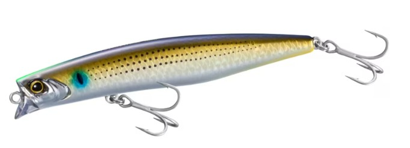
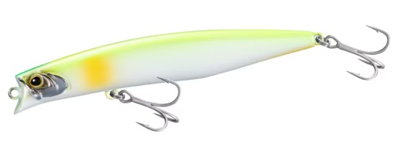
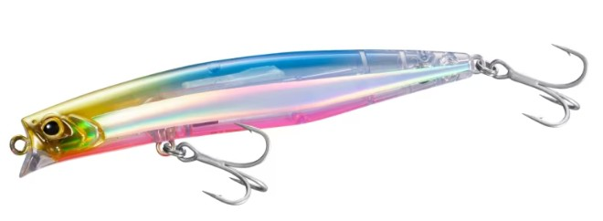
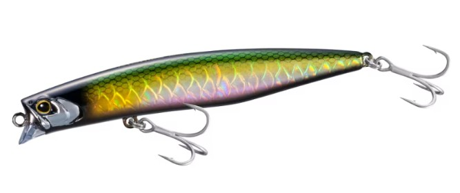

モニカ100F ジェットブースト
（Monika100F jetboost）
モニカ100F ジェットブーストはシマノ（エクスセンス）のシャローランナーです。
人気モデル「モニカ125F ジェットブースト」のダウンサイズ版として登場した100mmモデル。重心移動機構「ジェットブースト」により、コンパクトボディながら約49mの飛距離を実現し、水面直下0〜10cmのシャローレンジを攻略できるのが最大の魅力です。

画像出典:シマノ公式HP
スペック
- メーカー
- シマノ（SHIMANO）
- タイプ
- フローティングミノー（シャローランナー）
- 全長
- 100mm
- レンジ
- 0〜10cm
- 飛距離
- 約49m
- ターゲット
- シーバス
- 価格
- 2,000円（税抜）
- 発売
- 2026年9月
▼今すぐチェック

モニカ100Fの特徴
コンパクトボディで圧倒的な飛距離を叶える、ジェットブースト搭載シャローランナー
-
重心移動機構「ジェットブースト」で約49mの飛距離
キャスト時に重心が移動するジェットブーストにより、100mmのコンパクトボディでも安定した飛行姿勢で約49mの飛距離を実現。遠くのポイントまで届かせたい場面で頼れる。
-
着水後すぐに泳ぎ始めるスムーズなスイミングレスポンス
着水と同時にルアーが速やかに泳ぎ始める設計。ゆっくり巻いてもキレのあるロール主体の「タイトロール」アクションを演出できる。
-
スケールブーストでベイトフィッシュの鱗を再現
ベイトフィッシュの鱗模様を再現する「スケールブースト」を採用。水面直下でシルエットとフラッシングのバランスを両立する。
モニカ100Fの使い方
基本はただ巻き。水面直下0〜10cmのシャローレンジを、タイトロールで引き波を立てながら通すのが基本の使い方です。
ジェットブーストによる飛距離を活かして沖のポイントまで届かせ、スローリトリーブでもキレのあるロールアクションで誘う。表層でバイトが集中するマイクロベイトパターンの時間帯に強い。
モニカ100Fの得意な状況
水面直下にマイクロベイトが浮いているタイミングや、表層でライズが見られる状況が最大の出番。
飛距離が必要な広い河口・サーフから、コンパクトサイズでプレッシャーの高いポイントまで幅広く対応できる。シャローレンジを素早くサーチしたい場面で選びたい1本です。
ワンポイント
反応が渋い時は、着水直後の一巻き目で泳ぎ出しの良さを活かし、できるだけ早くターゲットのレンジに入れるとバイトにつながりやすくなります。
風が強い日は飛距離を活かして沖にキャストし、スローリトリーブでタイトロールをじっくり見せると効果的です。
オススメカラー
モニカ100Fは全10色展開。ベイトパターンに合わせやすいオススメカラーを厳選して紹介します。

Nイナッコボラの稚魚（イナッコ）パターンにマッチするナチュラル系カラー。河口で使いやすい。

パールチャート濁り潮やローライト時でも視認性を確保できる高アピールカラー。

マルチフラッシュ強いフラッシングでアピール力を重視したいサーチベイトとして使いやすい。

シルエットブラックマズメ時や夜間でもシルエットをしっかり出せるカラー。
画像出典:シマノ公式HP
モニカ100Fに似ているルアー
-
 カゲロウ100F
メガバス
詳細はこちら＞
カゲロウ100F
メガバス
詳細はこちら＞
全長100mm・自重12gのフローティングミノー。同じ100mmクラスで、LBOⅡによる遠投性能と低〜中速のナチュラルなロールアクションが持ち味。モニカ100Fより少し下のレンジ（20〜60cm）を探りたい時の持ち替え候補になる。
-
 アイザー100F
ブルーブルー
詳細はこちら＞
アイザー100F
ブルーブルー
詳細はこちら＞
全長100mm・自重13.5gのシャローランナー。水面下20cm以内を弱々しいアクションでゆっくり漂わせられ、プレッシャーの高い場所やベイトが小さく渋い状況に強い。表層付近を狙うモニカ100Fと使いどころが重なる1本。